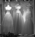
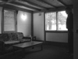
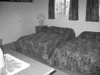
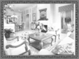
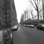
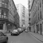
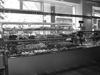
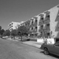
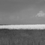

Project 4 / Scene Recognition with Bag of Words
Goal
Implement two different image representations -- tiny images and bags of SIFT features -- and two different classification techniques -- nearest neighbor and linear SVM.
Tiny images representation
Simply resized each image to a small, fixed resolution of 16 * 16. In order to improve its performance, I also implied zero mean and unit length to the tiny image.
Nearest neighbor classifier
The nearest neighbor classifier simply computes the distance matrix of training features and testing features，and finds the "nearest" training example and then assigns the label of that nearest training example to the test case.
Bag of SIFT representation
Bags of quantized SIFT features is a kind of more sophisticated image representation. I first sampled some local features from the training images and then clustering them with kmeans. The returned cluster centroids were used to establish a vocabulary of visual words. This vocabulary was saved and could be loaded repeatedly to avoid recomputing. After that, I sampled many SIFT descriptors for each training and testing image in the same way I did in building vocabulary, but more densely. And found the nearest neighbor kmeans centroid for each SIFT feature, then built a histogram to indicate the number of SIFT descriptors that fall into each cluster centroid in the vocabulary and normalized the histogram in the end.
Linear SVM classifier
Here I trained 1-vs-all linear SVMS using function vl_svmtrain() and created a hyperplane to categorize test cases, based on which side of the hyperplane they fall on. During actual computing, each test case would be classified as the category which returns the max score.
for i = 1 : num_categories
labels = -ones(N, 1);
labels(strcmp(categories{i}, train_labels)) = 1;
[w, b] = vl_svmtrain(train_image_feats', labels, LAMBDA);
W(i, :) = w;
B(i, 1) = b;
end
confidences = W * test_image_feats' + B;
[~, I] = max(confidences);
predicted_categories = cell(N, 1);
for i = 1 : N
predicted_categories{i} = categories{I(1, i)};
end
Tiny images representation and nearest neighbor classifier
Accuracy (mean of diagonal of confusion matrix) is 15.7%
Tiny images representation is not a particularly good representation, when paired with nearest neighbor classifier, only get 15.7% accuracy on the 15 scene database (using k nearest neighbors would increase performance slightly). But interestingly, we can see from the figure above that indoor scenes and outdoor scenes are almost classified into two groups. So this representation and classification technique may work well in classifying some broader categories.
Bag of SIFT representation and nearest neighbor classifier
Accuracy is 53.7% (vocabulary size = 400)
Different vocabulary sizes:
| Vocabulary Size | 10 | 20 | 50 | 100 | 200 | 400 | 500 | 600 | 1000 |
|---|---|---|---|---|---|---|---|---|---|
| Accuracy | 38.5% | 45.1% | 47.3% | 49.3% | 50.8% | 53.7% | 51.3% | 50.6% | 50.9% |
When paired bag of SIFT representation with nearest neighbor classifier, the accuracy increases dramatically. And with the increasing of vocabulary size (from 10 to 400), the accuracy becomes higher, but would be slower to compute. The ideal size of the vocabulary is near 400, since larger size would not improve the accuracy (even damage the accuracy) and cost a lot of time to generate the result.
Bag of SIFT representation and linear SVM classifier
Accuracy is 73.7% (vocabulary size = 1000, lambda = 0.0000005)
Different vocabulary sizes (lambda = 0.0000005):
| Vocabulary Size | 10 | 20 | 50 | 100 | 200 | 400 | 500 | 600 | 1000 |
|---|---|---|---|---|---|---|---|---|---|
| Accuracy | 41.2% | 53.1% | 59.9% | 67.7% | 70.5% | 72.7% | 73.2% | 72.8% | 73.7% |
When paired bag of SIFT representation with linear SVM classifier, the performance is better than paired that with neighbor classifier. Under this combination, accuracy would be changed by choosing different parameters. I played with these parameters many times and finally set the value of lambda to 0.0000005 to generate the highest accuracy. And it seems that larger vocabulary size would gain higher accuracy. But when vocabulary size is bigger than 500, the accuracy changes slightly. And these two classifiers have the similar ideal vocabulary size (or feature dimension) —— 400~500 under this 15 scene database.
Fisher encoding
I used gaussian mixture model to generate the parameters —— means, covariances and priors, and then implied fisher encoding to compute fisher vectors as image features. When paired with linear SVM classifier, the accuracy increases from 73.7% to 79.7% (see below). Since the size of fisher features is much more larger than SIFT.
Accuracy is 79.7% (vocabulary size = 400, lambda = 0.0000005)
Chi-sqr kernel
Here I used Chi square kernel to train the SVM, that is:
And when paired with bag of SIFT representation, the accuracy is 56.2%:
Accuracy is 56.2% (vocabulary size = 200, lambda = 50)
Cross-validation
I first merged the train and test images and then randomly picked out 100 images for training as well as testing from the merged set. And after picking training images, I removed picked images from the dataset and then picked testing images to avoid overlap. Then I repeated 10 and recorded means and standard deviations of accuracy:
| Iteration | 1 | 2 | 3 | 4 | 5 | 6 | 7 | 8 | 9 | 10 |
|---|---|---|---|---|---|---|---|---|---|---|
| Average accuracy | 35.0% | 38.0% | 40.7% | 41.0% | 42.4% | 42.8 | 43.9% | 43.1% | 42.3% | 42.6% |
| Standard deviation | 0.000 | 0.042 | 0.055 | 0.045 | 0.050 | 0.046 | 0.050 | 0.051 | 0.053 | 0.051 |
397-category SUN database
The image size and the number of images of 397-category SUN database are both very large, so it took me a lot of time to run my algorithm based on it. Since the least number of each category is 100, so I used the top 50 images as training data, and pick another 50 images as testing data. Some images are not black-and-white, so I turned them into gray images before doing further computation.
Accuracy is 0.4%
(tiny images representation and nearest neighbor classifier)
(50 images * 397 categories * 2)

When I used tiny images representation and nearest neighbor classifier, the result accuracy is amazing low, only %0.4 (see the figure above), just slightly higher than the accuracy of randomly guess (0.25%). In order to figure out the reason, I chose 15 categories (more than 200 images for each category), and ran the algorithm again to compare the result with the "15 scene database". The result I obtained is:
Accuracy is 8.3%
(tiny images representation and nearest neighbor classifier)
(100 images * 15 categories * 2)
The accuracy is also very low. The reason why it is lower than the "15 scene database" may because that the images' size of SUN database is much more bigger, and tiny images representation discards all of the high frequency image content, with small revolution, even human eyes can not classify them well.
Accuracy is 2.4%
(bag of SIFT representation and linear SVM classifier)
(50 images * 397 categories * 2)
When I used bag of SIFT representation and linear SVM classifier to run whole 397 categories, the result accuracy is only 2.4%. And from the figure above, we can see that several categories "attract" most images. After that, I also chose 15 categories (more than 200 images for each category), and ran the algorithm again to compare the result with the "15 scene database". The result I obtained is:
Accuracy is 46.3%
(bag of SIFT representation and linear SVM classifier)
(vocabulary size = 200, lambda = 0.000001)
(100 images * 15 categories * 2)
The accuracy is 46.3%.
Since each category has different number of images (from 100 to more than 1000), I tried to divide all images of each category into 2 equal sets (one for taining and the other for testing) to gain a reasonable result of this database. And then I ran the code, but 20 hours later, it was still running! Time was tough, so I had to give up.
The best performing recognition setup is Fisher encoding paired with linear SVM classifier (vocabulary size = 400, lambda = 0.0000005):
Scene classification results visualization
Accuracy (mean of diagonal of confusion matrix) is 0.797
| Category name | Accuracy | Sample training images | Sample true positives | False positives with true label | False negatives with wrong predicted label | ||||
|---|---|---|---|---|---|---|---|---|---|
| Kitchen | 0.700 |  |
 |
Store |
Bedroom |
Office |
 Bedroom |
||
| Store | 0.810 |  |
 Kitchen |
Kitchen |
Industrial |
 InsideCity |
|||
| Bedroom | 0.570 |  |
 |
 TallBuilding |
 Store |
 Forest |
 LivingRoom |
||
| LivingRoom | 0.590 |  |  Bedroom |
 Bedroom |
 Bedroom |
Bedroom |
|||
| Office | 0.960 |  |
 |
 LivingRoom |
 Kitchen |
Kitchen |
Bedroom |
||
| Industrial | 0.740 |  |
 Store |
 Kitchen |
 LivingRoom |
 Store |
|||
| Suburb | 1.000 |  |
 LivingRoom |
 OpenCountry |
|||||
| InsideCity | 0.820 |  |
 |
 |
 LivingRoom |
 Street |
 Bedroom |
TallBuilding |
|
| TallBuilding | 0.850 |  |
 |
InsideCity |
InsideCity |
InsideCity |
InsideCity |
||
| Street | 0.850 |  |  |  |
 TallBuilding |
 TallBuilding |
Highway |
InsideCity |
|
| Highway | 0.880 |  |
 Street |
 Store |
 Coast |
OpenCountry |
|||
| OpenCountry | 0.580 |  |
 |
Coast |
 Street |
 Mountain |
Coast |
||
| Coast | 0.810 |  |
 |
 |
 OpenCountry |
 OpenCountry |
 OpenCountry |
Highway |
|
| Mountain | 0.840 |  |
 Forest |
 OpenCountry |
Coast |
 OpenCountry |
|||
| Forest | 0.950 |  |
 OpenCountry |
 Mountain |
 Mountain |
 TallBuilding |
|||
| Category name | Accuracy | Sample training images | Sample true positives | False positives with true label | False negatives with wrong predicted label | ||||